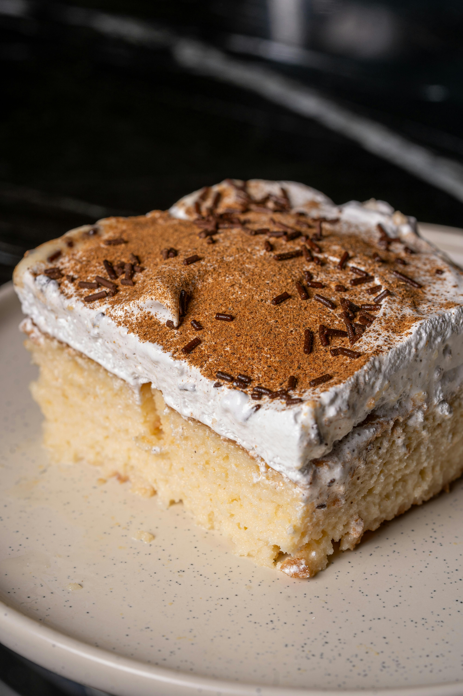
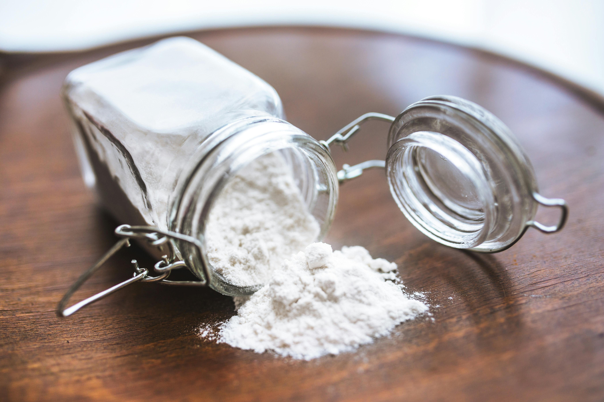
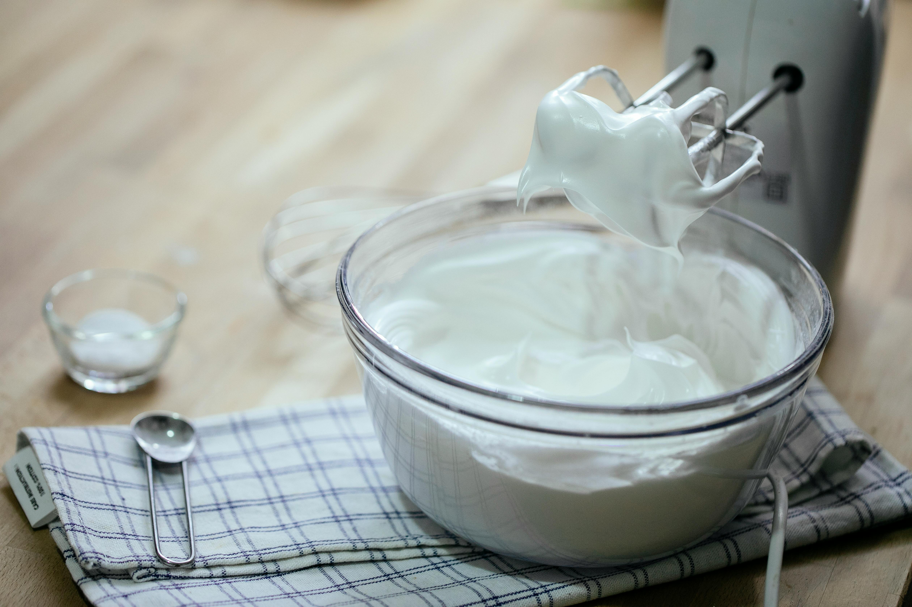

Tres Leches

Description
A sponge cake soaked in three different kinds of milk. Loved universally for its fluffy and light texture and sweet sweet goodness.
Quick Facts
- Prep Time: 15 mins
- Cook Time: 30-35 mins
- Additional Time: 15 mins
- Total Time: About an hour
- Servings: 24
Ingredients
- 1 1/2 cups all-purpose flour
- 1 teaspoon baking powder
- 1/2 cup unsalted butter
- 1 cup white sugar
- 5 large eggs
- 1/2 teaspoon vanilla extract
- 2 cups whole milk
- 1 (14 ounce) can sweetened condensed milk
- 1 (12 fluid ounce) can evaporated milk
- 1 1/2 cups heavy whipping cream
- 1 cup white sugar
- 1 teaspoon vanilla extract


Steps
- Gather and prepare your ingredients.
- Preheat your oven to 350 degrees F (or 175 degrees C). Set out a 9x13 inch baking pan, grease and flour.
- Sift baking powder and flour together, set aside.
- Beat butter and sugar together in a large bowl using an electric mixer unitl mixture is light in color and fluffy. Add vanilla and eggs and mix well. Add Flour mixture 1/2 cup at a time, mixing until blended.
- Pour batter into your prepared baking pan.
- Bake in oven until a toothpick pressed into the center comes out clean, typically about 30 minutes. Pierce cake all over with a fork and let cool to room temperature.
- Mix condensed, whole, and evaporated milk together in a bowl.
- Pour milk mixture over the top of the cooled cake and allow to soak.
- Whip 1 cup of sugar, 1 teaspoon vanilla extract, and cream in a chilled metal or glass bowl with a mixer until uniform thickness is acheived.
- Once the milk mixture is soaked into the cake, spread your freshly mixed cream on top.
- Keep cake refrigerated until you're ready to serve. dust the top with ground cinnamon over the top of the cake before slicing.